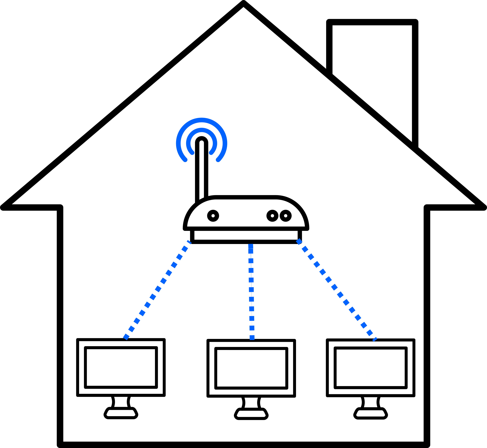
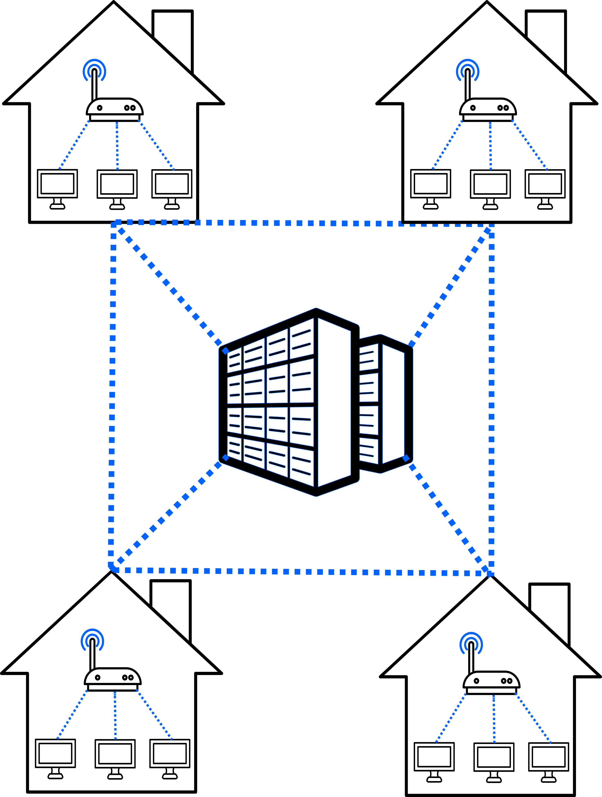
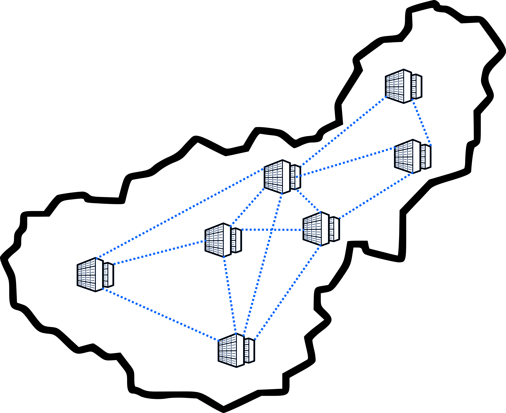
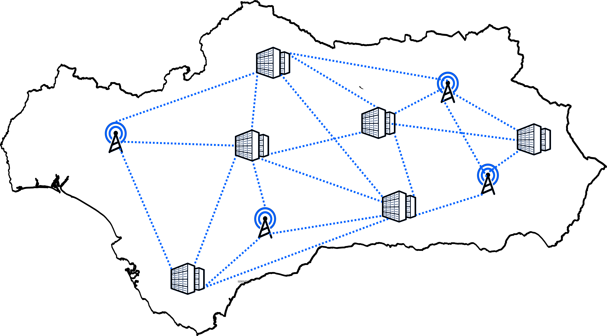

- ¿Qué es Internet?
- ¿Cómo nace una red de redes?
- Evolución de internet.
- Primeros pasos.
- Modernización.
- Popularización.
- El futuro de internet.
Índice
¿Qué es Internet?
Internet se puede definir como una red mundial de redes de ordenadores, una red de redes mediante la cual cualquier ordenador puede conseguir información o comunicarse con otro ordenador de esta red utilizando un sistema de reglas de comunicación llamado TCP/IP.
Y es que es literalmente una red de redes, observa esta explicación gráfica:
En tu casa ya existe una red de dispositivos unidos a tu router:
Esta pequeña red se conecta a un centro de datos de tu localidad y a la vez a otras redes de otros edificios:
Esta red a su vez se conecta a otras redes conectadas a otros centros de datos en tu provincia:
Que a su vez se conecta a una similar del resto de provicincias y toda la Comunidad Autónoma, todas estas conexiones pueden ser por cable o inalambricas:
Y esta además a otros centros de datos de España:

De la misma manera, se transmite al resto de Europa:

Y finalmente, al mundo, incluso por satélite: